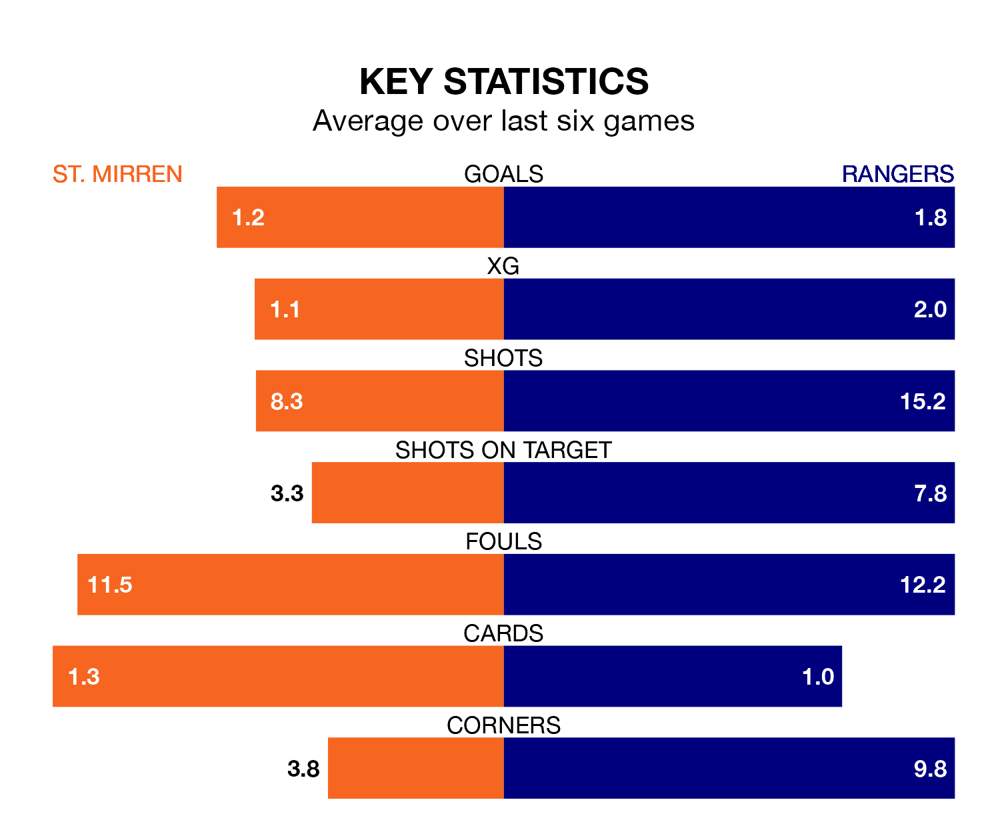

Rangers are strong favourites to take all three points despite St. Mirren's home advantage in Sunday lunchtime's match at the SMISA Stadium.
*Betting Company* are offering odds of 1.33 on Rangers sealing the win, with the visitors sitting second in the Premiership table.
St. Mirren, who are fifth in the league and 32 points behind Rangers, are priced at 6.7 to win. A draw is set at 4.7.
With 72 goals in 33 games so far this season, Rangers are the league's second-highest scorers with 2.2 goals per game. And they are conceding fewer than average, letting in 23 goals at a rate of 0.7 per game.
St. Mirren, meanwhile, are below average scorers, with 1.2 goals per game, compared to a league average of 1.3. They have conceded 1.3 goals per game.
With Jack Butland between the sticks, the visitors can rely on one of the league's safest pair of hands. He has kept 18 clean sheets in his 33 appearances this season, and no 'keeper has prevented the opposition scoring more often in the Premiership.
In the Buddies's net, Zachary Hemming has 10 clean sheets in 33 games. He has conceded a goal every 74 minutes, 70% more often than the 129 minutes between goals for Butland.
In the last 10 years, St. Mirren and Rangers have played each other on 24 occasions. St. Mirren won one of them, Rangers 21, and they drew twice.
On average, the Buddies scored 0.4 goals and Rangers 2.4 in those matches.
Their last meeting was on January 27, when Rangers won 1-0 away.
The home side are in disappointing form in the Premiership, with one win and two draws from their last six games.
With two wins and two draws over that period, Rangers's form is better – they have taken eight points from 18, compared to St. Mirren's five.
St. Mirren's last match was on April 13, a 3-0 loss against Celtic.
Rangers drew 0-0 with Dundee last time out, on April 17.
Updated: 07:59 (UTC), 26/04/24